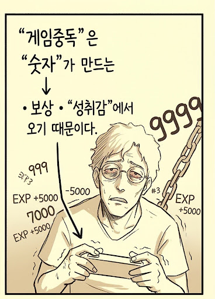

시간이 흐를수록 지훈의 눈은 핏발이 섰고 얼굴은 수척해졌다. 게임 속 캐릭터는 화려한 장비와 레벨을 갖춰갔지만, 현실의 지훈은 점점 무너져 내렸다. '9999'라는 숫자가 적힌 무거운 쇠사슬이 그의 영혼을 짓눌렀다.
그것은 '가짜 성취감'이라는 이름의 감옥이었다. 숫자가 올라갈수록 기뻐야 하는데, 이상하게도 그의 마음은 점점 더 공허해졌고, 자신도 모르는 사이에 그는 보상이라는 마약에 취해 자제력을 잃은 중독자가 되어가고 있었다.